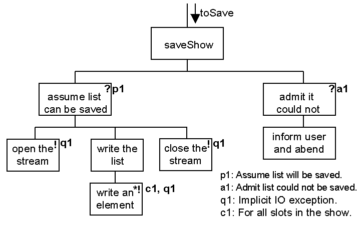
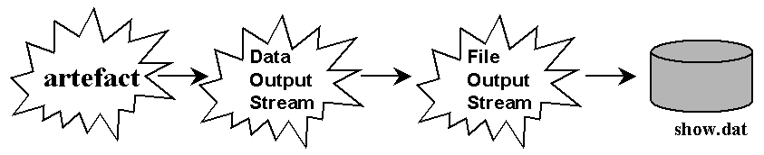
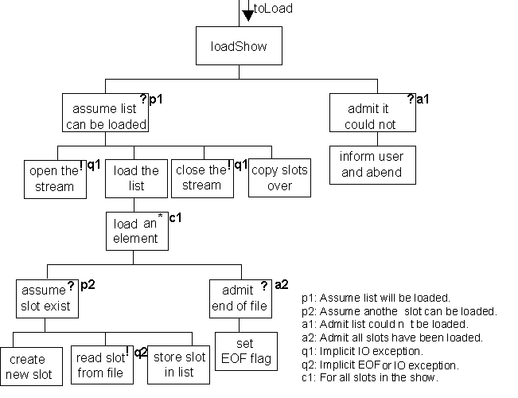
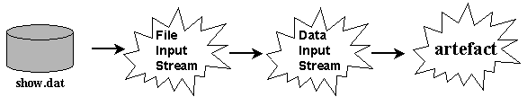

The fifth RadioShow iteration.
The fifth RadioShow iteration adds three new options to the menu presented to the user. One to clear the contents of the list of slots, one to write them to a file (always called show.dat) and one to read them from the file. Accordingly the list of slots can be written, the list cleared and this verified by showing the empty list and then read back from the file and shown again.
The method to clear all slots is called clearAllSlots() and is implemented, without comment, as follows.
private static void clearAllSlots( Vector listToClear) {
listToClear.clear();
} // End clearAllSlots
The design for the method called saveShow() is as follows.

Like all methods concerned with IO it makes extensive use of exception handling. The saveShow() method is a posit/ admit structure assuming that the list can be saved and admitting that it could not. In the assume part there is a common pattern of opening the stream, using the stream and closing the stream. The part which uses the stream writes the list to the stream by iteratively writing each element from the list to the stream. The implementation of this design is as follows.
0151 private static void saveShow( Vector toSave) {
0152
0153 DataOutputStream saveToHere = null;
0154 RadioSlot currentSlot = null;
0155
0156 try {
0157 saveToHere = new DataOutputStream(
0158 new FileOutputStream( "show.dat"));
0159 for ( int index = 0; index < toSave.size(); index++) {
0160 currentSlot = (RadioSlot) toSave.elementAt( index);
0161 currentSlot.writeSlot( saveToHere);
0162 } // End for.
0163 saveToHere.close();
0164 } catch ( IOException exception) {
0165 System.err.println( "\nERROR writing the file - abending!");
0166 System.exit( -1);
0167 } // End try/catch
0168 } // End saveShow
The posit/ admit part of the design is implemented with the try/ catch structure on lines 0156 to 0167.
On lines 0165 and 0166 the error message is written to the System.err print stream and not the System.out print stream and the -1 argument to the System.exit( -1) method indicating an abnormal end to the program. Within the try part, the stream is constructed and opened on lines 0157 and 0158. Conceptually this can be thought of as follows:

Which is indicating that the artefact (the RadioShow program) is writing to a DataOutputStream which in turn writes to a FileOutputStream which writes to the file called show.dat. When lines 0157 and 0158 are executed any existing show.dat file in the default directory will be deleted and a new empty file prepared for writing to. If for any reason this cannot be accomplished (e.g. the program may not have permission to delete any files) an IOException will be thrown. At the end of the try sequence, on line 0163 the stream is closed and the file will be fully updated by flushing any remaining information to it.
The for loop on lines 0159 to 0164 and the retrieval of each RadioSlot in turn from the Vector is comparable with other RadioShow methods as described in waypoint 2. On line 0161 the currentSlot's writeSlot() method is called which, as described on the previous page, will write the state of the instance to the saveToHere stream passed as an argument it. The overall effect, if no exceptions are thrown, is to write the state of every RadioSlot in the list to the file show.dat.
The design for the method called loadShow() is as follows.

This first level of this design is again a posit/ admit which abends if it turns out that the list could not be loaded. The loading part commences by opening an input stream, then loading the list into an temporary vector and closing the list. Once the list has been loaded into the temporary vector it is copied into the toLoad vector to make it available. The reason for this is that if an exception is thrown half way through loading the list the toLoad list (the main RadioShow list) will be unchanged.
Loading the list consists of iteratively loading an element until all slots have been loaded from the stream. This involves a posit/ admit structure which assumes that there is another slot in the stream and sets the End Of File flag to terminate the loop when there is not. To load a slot a new RadioSlot instance is first created, the slot is read from the file into it andit is then stored in the (temporary) list.
This design involves two levels of posit/ admit control. If an EOF exception is thrown at q1 it will be caught and handled by a2. However if an IO exception is thrown at q2 the exception will be checked at a2 and as it is not an EOF exception propagated onwards to a1, where it would be caught and handled. If any other kind of exception were to be thrown at q2 it would not be caught at a2 nor at a1 and would propagate from the method. If this were the case then the header of the method would have to indicate that it might propogate an exception by including a throws clause (like the writeSlot() or readSlot() methods from the previous page).
The implementation of this method is as follows.
0171 private static void loadShow( Vector toLoad) {
0172
0173 Vector temporaryList = null;
0174 DataInputStream loadFromHere = null;
0175 RadioSlot currentSlot = null;
0176 boolean fileNotFinished = false;
0177
0178 try {
0179 loadFromHere = new DataInputStream(
0180 new FileInputStream( "show.dat"));
0181 temporaryList = new Vector();
0182 fileNotFinished = true;
0183
0184 while ( fileNotFinished) {
0185 try {
0186 currentSlot = new RadioSlot();
0187 currentSlot.readSlot( loadFromHere);
0188 temporaryList.addElement( currentSlot);
0189 } catch ( EOFException exception) {
0190 System.out.println( "\n" + temporaryList.size() +
0191 " transactions read from file.");
0192 fileNotFinished = false;
0193 } // End try/catch
0194 } // End while.
0195 loadFromHere.close();
0196
0197 clearAllSlots( toLoad);
0198 for ( int index = 0; index < temporaryList.size(); index++) {
0199 toLoad.addElement( temporaryList.elementAt( index));
0200 } // End for.
0201
0202 } catch ( IOException exception) {
0203 System.out.println( "\nERROR writing the file - abending!");
0204 System.exit( -1);
0205 } // End try/catch
0206 } // End loadShow
Line 0178 and lines 0201 to 0205 implement the high level try/ catch structure. Lines 0179 and 0180 construct and open the DataInputStream, connected to a FileInputStream, connected to the file show.dat; in a reverse manner to the DataOutputStream described above.

With the stream openend the temporaryList and the fileNotFinished flag are prepared on lines 0181 and 0182 before the loop, controlled by the fileNotFinished flag, is started on line 0184. Within the while loop there is the lower try/ catch structure whose try part constructs a new RadioSlot called currentSlot (line 0186), intitalises its state from the loadFromHere stream (line 0187) and stores it in the temporaryList (line 0188).
It is anticipated that at some time all the slots will be read from the file and the call of readSlot() on line 1087 will throw an EOFException which is caught on line 0189. The first statement in the catch clause (lines 0190 and 0191) is a debugging statement indicating the number of slots that have been loaded and line 0192 sets the fileNotFinished flag to terminate the loop.
On lines 0197 to 0200, if no IOException has been thrown, the slots can be safely moved from the temporaryList to the toLoad list supplied as an argument to the method. Finally the catch clause which concludes the method informs the user of a major problem and abends the program.
Return to way 6 part 1 Schedule